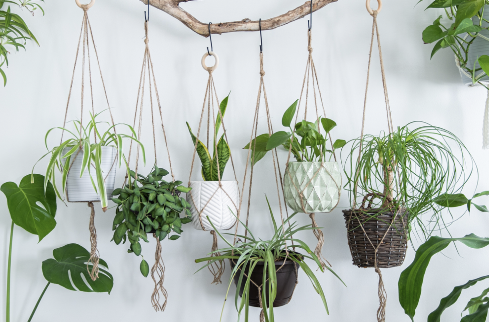

4 types of plants
| 1.Dracena |
| 2.Pothos |
| 3.Dracena sanderiana |
| 4.Zamioculcas zamiifolia |
1.Dracena
WATERING
Water only when the soil has dried and enjoys a refreshing mist for that tropical humidity it loves.
LIGHTING
Thrives in bright, filtered light, perfect for that sun-kissed glow.
TEMPERATURE
Grows ideally in moderate room temperatures and can adapt up to 30 degrees Celsius.
2.Pothos
WATERING
Once a week in summer; once every 2 weeks in winter
LIGHTING
Does well in low to medium sun
TEMPERATURE
emperatures between 70 and 90°F but will survive a wide range of environmental conditions.
3.Dracena sanderiana
WATERING
The Dracaena sanderiana (Lucky Bamboo) likes to be watered occasionally, but also needs to soil to dry out slightly. Water when the top of the soil has dried out.
LIGHTING
The Dracaena sanderiana (Lucky Bamboo) does best in a spot where it gets bright, indirect sunlight. This spot is always bright but never gets direct sunlight.
EMPERATURE
The Dracaena sanderiana (Lucky Bamboo) prefers a spot that consistently stays between 16 - 32°C (60 - 89°F).
4.Zamioculcas zamiifolia
WATERING
Once every 2-3 weeks in summer; once a month in winter
LIGHTING
Does fine with any amount of light as long as it’s not direct
EMPERATURE
temperatures in the 65°F-85°F range (18°C-30°C)